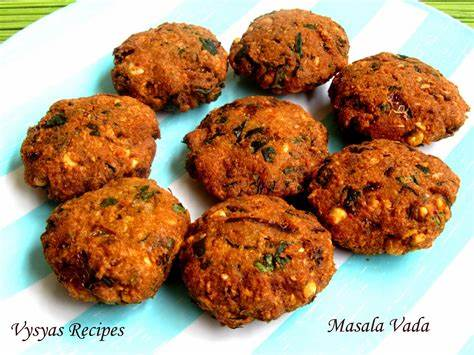

Ingredients
- 1 cup urad dal (split black gram) soaked for 4-5 hours
- 1 small onion, finely chopped
- 1-2 green chilies, finely chopped
- 1-inch ginger, grated
- 1/4 teaspoon asafoetida (hing)
- 1/4 teaspoon cumin seeds
- 1/4 teaspoon black pepper (optional)
- Salt to taste
- Oil for deep frying
Instructions
- Drain the soaked urad dal and grind it to a smooth batter in a blender or food processor. Add a little water if necessary.
- Transfer the batter to a mixing bowl and add the chopped onions, green chilies, grated ginger, asafoetida, cumin seeds, black pepper (optional), and salt. Mix well.
- Heat oil in a deep frying pan over medium heat.
- Wet your hands and take a small portion of the batter. Shape it into a small ball and make a hole in the center (like a doughnut).
- Carefully drop the shaped vada into the hot oil and fry until golden brown and crispy on both sides. Do not overcrowd the pan.
- Remove the vadas and place them on a paper towel to drain excess oil.
- Serve hot with chutney or sambar.
Enjoy your delicious Vadas!